Plot for TuningInstanceSingleCrit
Source:R/TuningInstanceSingleCrit.R
autoplot.TuningInstanceSingleCrit.RdGenerates plots for mlr3tuning::TuningInstanceSingleCrit.
Arguments
- object
- type
(
character(1)): Type of the plot. Available choices:"marginal": scatter plots of hyperparameter versus performance. The color of the points shows the batch number."performance": scatter plots of batch number versus performance."parameter": scatter plots of batch number versus hyperparameter. The color of the points shows the performance."parallel"parallel coordinates plot. Parameter values are rescaled by(x - mean(x)) / sd(x)."points"- scatter plot of two hyperparameters versus performance. The color of the points shows the performance."surface": surface plot of 2 hyperparameters versus performance. The performance values are interpolated with the supplied mlr3::Learner."pairs": plots all hyperparameters and performance values against each other.
- cols_x
(
character())
Column names of hyperparameters. By default, all untransformed hyperparameters are plotted. Transformed hyperparameters are prefixed withx_domain_.- trafo
(
logical(1))
Determines if untransformed (FALSE) or transformed (TRUE) hyperparametery are plotted.- learner
(mlr3::Learner)
Regression learner used to interpolate the data of the surface plot.- grid_resolution
(
numeric())
Resolution of the surface plot.- ...
(
any): Additional arguments, possibly passed down to the underlying plot functions.
Value
ggplot2::ggplot() object.
Theme
The theme_mlr3() and viridis color maps are applied by default to all
autoplot() methods. To change this behavior set
options(mlr3.theme = FALSE).
Examples
if (requireNamespace("mlr3tuning") && requireNamespace("patchwork")) {
library(mlr3tuning)
learner = lrn("classif.rpart")
learner$param_set$values$cp = to_tune(0.001, 0.1)
learner$param_set$values$minsplit = to_tune(1, 10)
instance = TuningInstanceSingleCrit$new(
task = tsk("iris"),
learner = learner,
resampling = rsmp("holdout"),
measure = msr("classif.ce"),
terminator = trm("evals", n_evals = 10))
tuner = tnr("random_search")
tuner$optimize(instance)
# plot performance versus batch number
autoplot(instance, type = "performance")
# plot cp values versus performance
autoplot(instance, type = "marginal", cols_x = "cp")
# plot transformed parameter values versus batch number
autoplot(instance, type = "parameter", trafo = TRUE)
# plot parallel coordinates plot
autoplot(instance, type = "parallel")
# plot pairs
autoplot(instance, type = "pairs")
}
#> Loading required namespace: mlr3tuning
#> Warning: the standard deviation is zero
#> Warning: the standard deviation is zero
#> Warning: the standard deviation is zero
